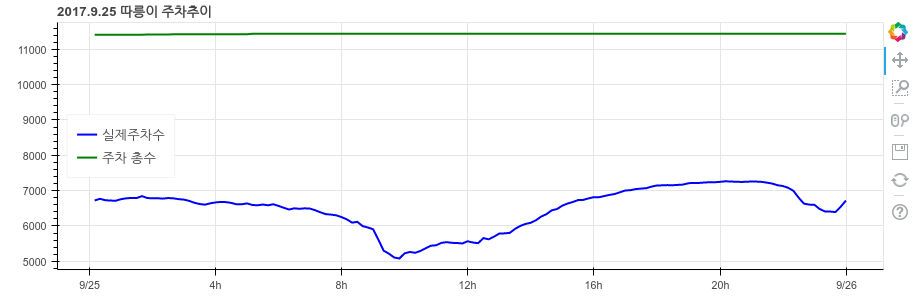

믿지말라 그리고 질문하라
Sun 01 October 2017
송길영 다음소프트 부사장
무엇을 포기해야 하는가?
지식의 유효기간 관심의 유효기간
믿지말라 그리고 질문하라
Read More송길영 다음소프트 부사장
무엇을 포기해야 하는가?
지식의 유효기간 관심의 유효기간
믿지말라 그리고 질문하라
Read MoreCategory: misc Tagged: daily thought feature 세바시
Read More가능하면 빨리 실패하라. 실수를 빨리파악하고 인정하는 것이 자신에게 유리하다
성공에 남다른 비결이 있는 게 아니라 모두 다 아는 지혜를 실천하기에 달린 것이다.
파도를 아닌 파도를 만드는 바람을 보는 세상의 눈이 필요하다.
문제를 쫓아 다니면 문제만 쫓아 다닌다. 근본적인 원인을 생각하라.
승리는 우리를 흥분시킨다. 하지만 1등을 하지 못했다고 부끄러워할 필요는 절대 …
Category: 문장
Read MoreCategory: misc
Read More
파랑 - 실제 주차장에 주차되어있는 수
Read More